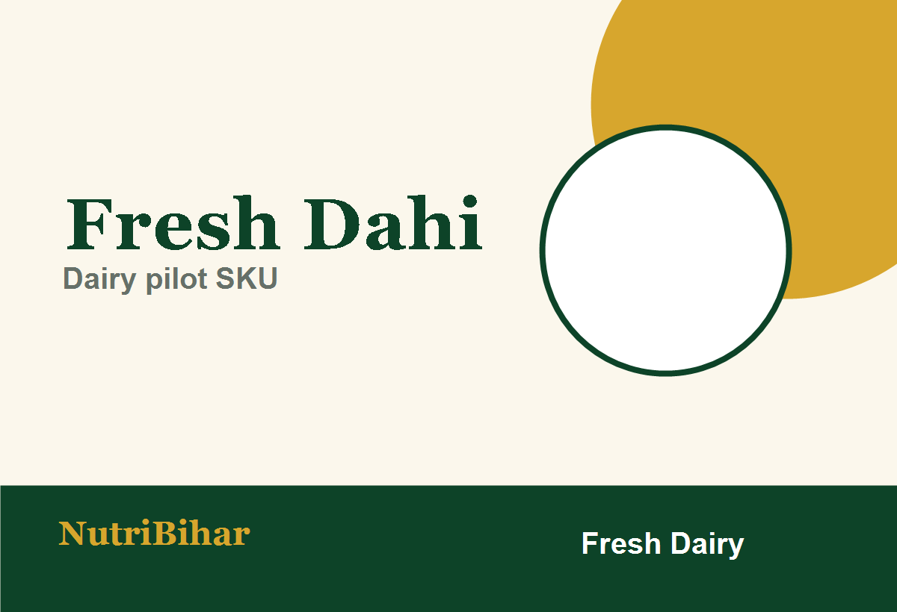
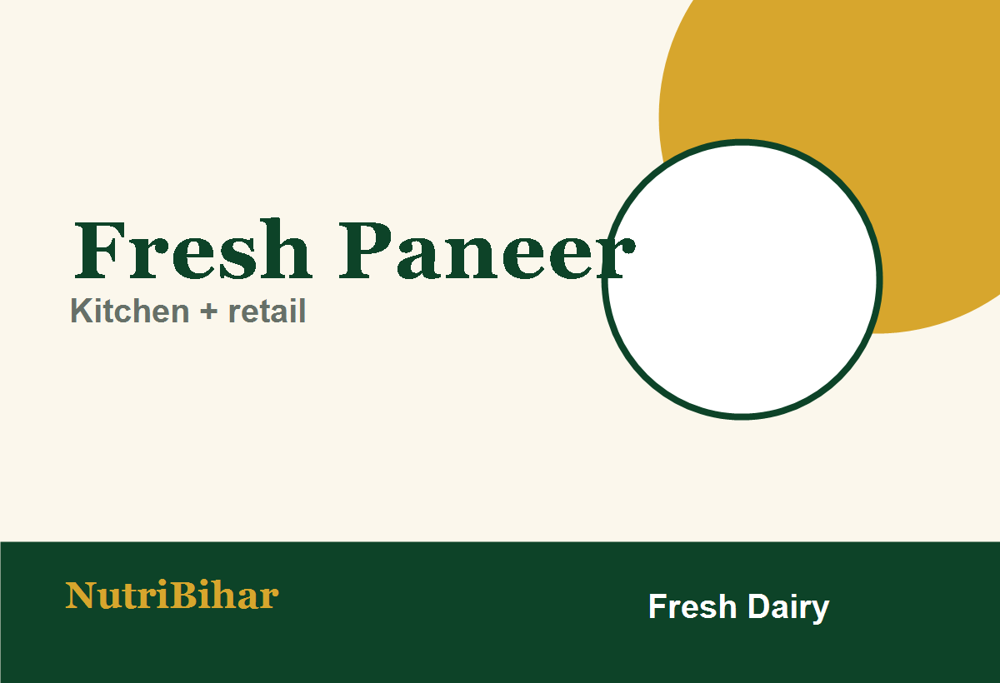
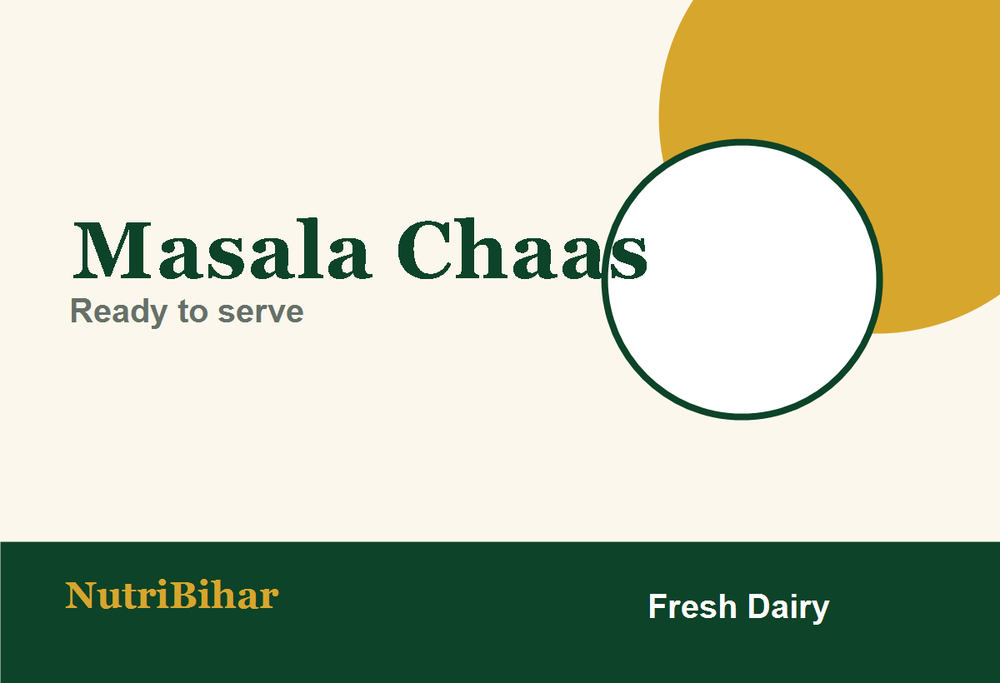

Start SKU 1
Fresh Dahi
Daily meal add-on and future subscription base. Track batch, packing date and cold storage.
Fresh Dahi, Fresh Paneer and Masala Chaas support the kitchen menu and can also be sold independently with batch dates and cold-chain handling.

Daily meal add-on and future subscription base. Track batch, packing date and cold storage.

Supports paneer bowls, kitchen prep and independent retail orders.

Low-friction beverage cross-sell for meals, subscriptions and office lunch plans.
Dairy processing should not happen beside vegetable washing, dirty utensils or dispatch traffic.
Use dedicated refrigeration, cold-room discipline, insulated bags and temperature data logs.
Record milk receipt, testing, pasteurisation, incubation, packing date and customer complaint process.